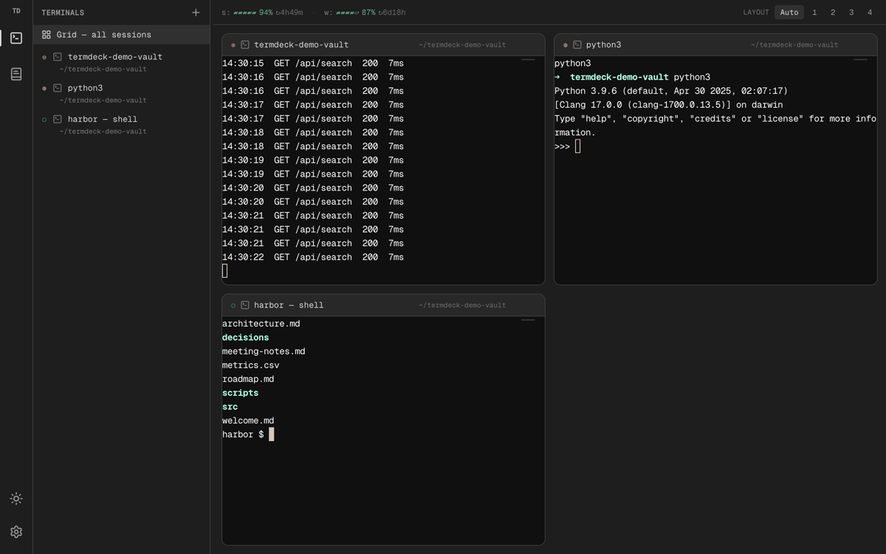
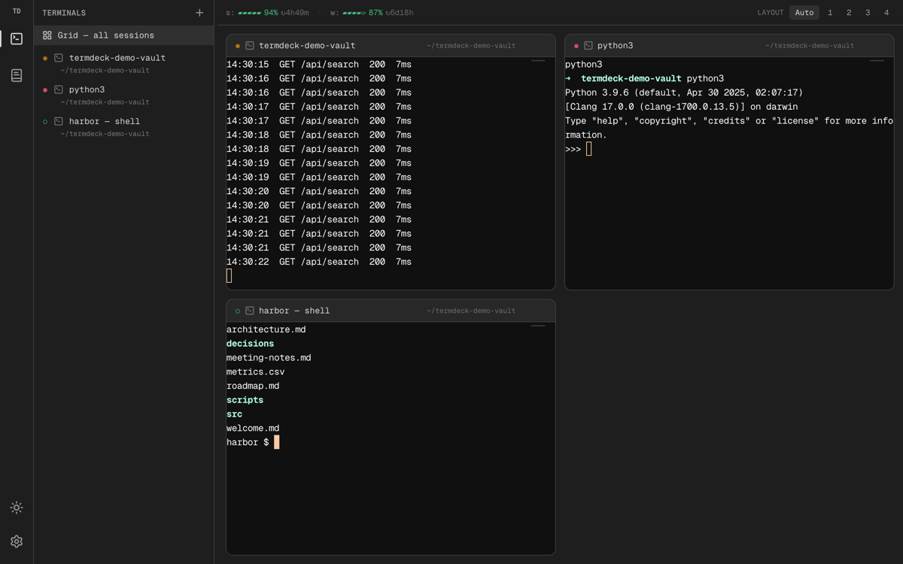
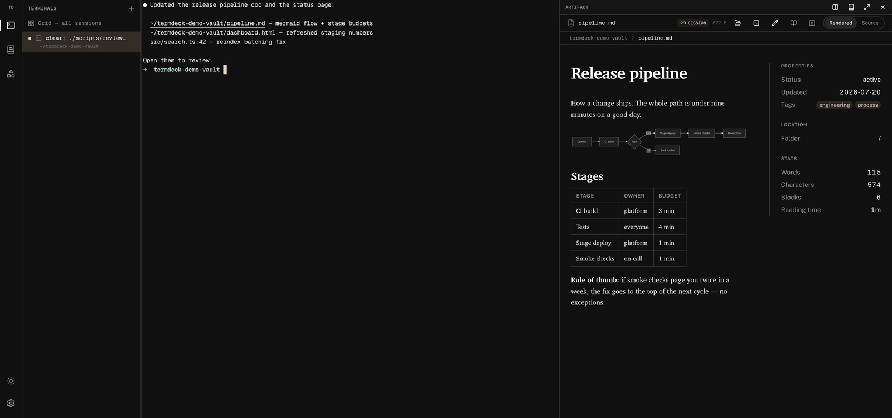
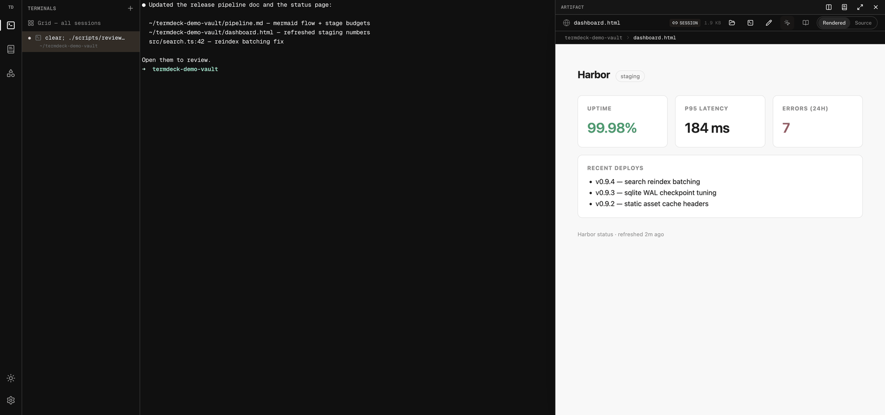
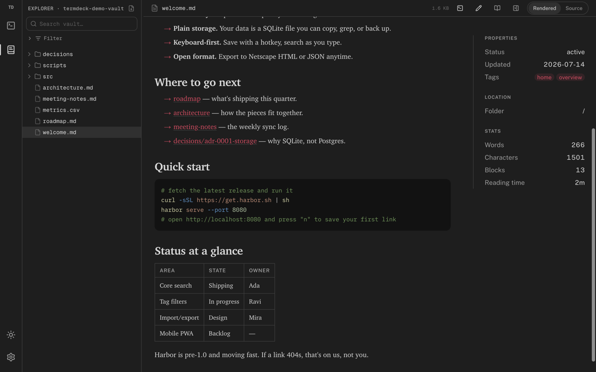
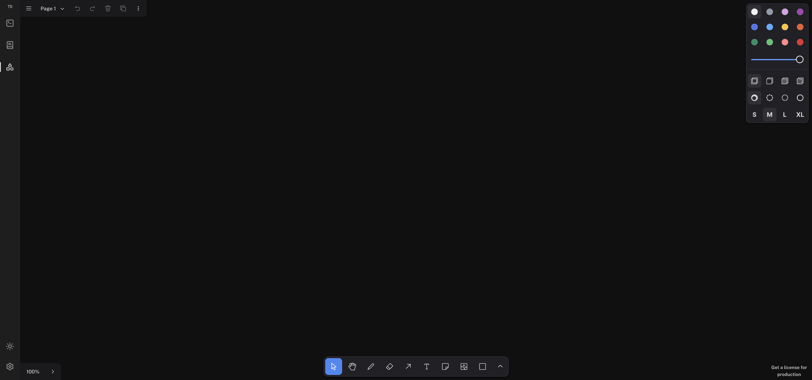
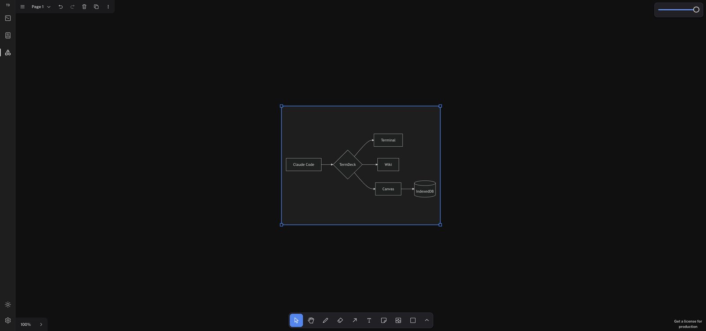

Self-hosted · MIT fork of localterm · One tab
You run coding agents in terminals all day. TermDeck puts those terminals in the browser and wires everything around them: file paths you can click, docs that render, HTML you can annotate and send back to the agent, and a canvas for thinking. Your machine, your files, one tab.
Built on localterm by @monotykamary · wiki inspired by anh-chu/wiki-viewer

Terminal
A real terminal multiplexer in the browser: sessions keep running when you close the tab, reattach from any device on your tailnet — the phone included. The grid shows every session live, so a wall of agents is one glance.

Click-to-preview
Your agent prints report.md, dashboard.html, src/search.ts:42 —
in TermDeck those are links. Click one and it opens rendered in a drawer beside the terminal:
Markdown with typography, code with syntax highlighting jumped to the line, CSV as tables,
images, PDFs, HTML as the actual page. The terminal never moves.

agent prints paths → click → rendered markdown → click code path → line 42, highlighted
file.ts:42 opens the source scrolled and highlighted at 42.Tweak mode
The drawer renders HTML — a vault file or your deployed app through a same-origin proxy. Toggle Tweak and the page becomes an element picker: click the thing that's wrong, type what should change, and TermDeck sends the agent a structured message — robust CSS selector, element snippet, your note — straight into its terminal session.

render dashboard.html → tweak mode → pick element → note → batch → “Send 2 tweaks”
Wiki
The same daemon serves your notes as a wiki: serif reading surface, frontmatter panel,
reading stats, full-text search, filters, and Obsidian [[wikilinks]] that
resolve. Editing is WYSIWYG with slash commands — frontmatter preserved verbatim,
markdown round-trips losslessly.

```mermaid fences render as live diagrams in every surface.Canvas new
The third mode is a tldraw canvas — fully offline (assets bundled, document in IndexedDB, no accounts, nothing leaves your machine). And it understands what you paste: mermaid source becomes a live diagram, a Markdown doc becomes a rendered card — tables, code, and embedded charts included.

paste a markdown doc → rendered card with table + live mermaid flow

paste bare mermaid → a diagram shape; double-click to edit the source in place
Install
Node 24+, pnpm. Clone, build, start — then open the printed URL anywhere on your tailnet.
# clone the deck git clone https://github.com/huytieu/termdeck-localterm cd termdeck-localterm # build everything (server + frontend) pnpm install && pnpm build # start the daemon pnpm start ✓ termdeck up on http://localhost:3417